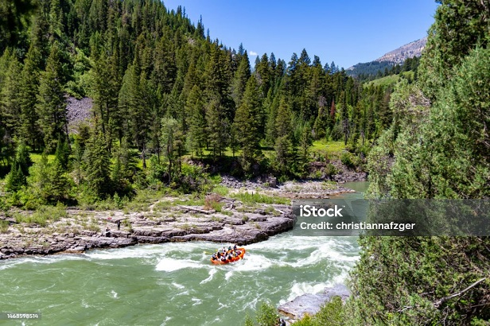
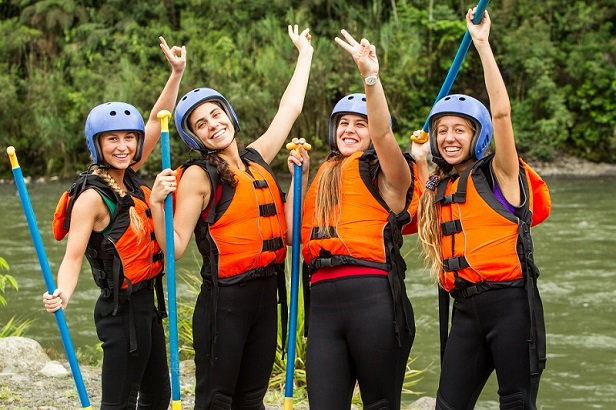

we position ourselves as leaders in thrilling water adventures. Our focus is on providing safe, memorable, and adrenaline-filled rafting experiences. With expert guides, top-quality equipment, and a deep respect for nature, we strive to offer our customers a unique connection to the rivers and the wild beauty that surrounds us. Join us for an unforgettable adventure on the whitewater!”


White Water Rafting
History
Many years ago, deep within the mountains where rivers roared and crystal-clear waters flowed, a bold idea was born. A group of nature-loving friends decided to create a rafting company. Their mission: to share the thrill of conquering rapids and descending canyons with fellow adventurers. Their journey began with worn-out rafts, patched paddles, and hearts full of enthusiasm. Challenges were constant—repairing broken rafts, battling the elements—but each obstacle strengthened their resolve. They learned to read the rivers, anticipate rapids, and function as a tight-knit family. The first clients arrived hesitantly—some novices, others adrenaline junkies. “Wild River Adventures” guides shared stories, instructions, and laughter. Together, they navigated turbulent waters, feeling the spray on their faces and adrenaline in their veins. Word spread, and tourists flocked from all corners of the globe. “Wild River Adventures” expanded, hiring more guides and upgrading equipment. Yet, their original spirit remained: passion for adventure and reverence for nature. Today, “Wild River Adventures” stands as a rafting industry leader. Expert guides, state-of-the-art rafts, and repeat customers define their success. But at its core, the memories of those early days persist—the challenging rapids, campfire laughter, and the raw thrill of being alive in untamed wilderness. And so, the legend of “Wild River Adventures” endures—a company that offers not just adrenaline but also a connection to the earth and oneself. 🌊🚣♂️